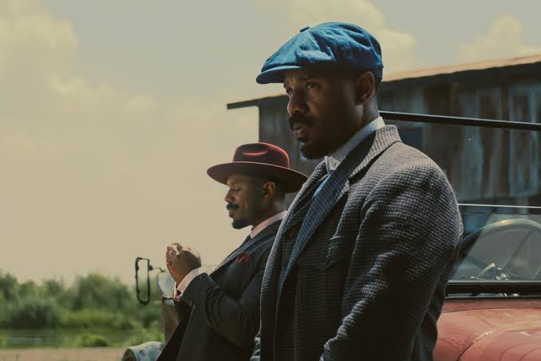

Project Hail Mary by Andy Weir follows Ryland Grace, a scientist who wakes up alone on a spaceship with no memory of who he is or why he is there. As his memories slowly return, he discovers that Earth is facing an extinction-level threat caused by a mysterious organism that is draining energy from the Sun. Grace realizes he has been sent on a desperate mission to find a solution and save humanity. During his journey, he encounters an alien named Rocky, who is facing the same threat on his own planet. Despite their differences, the two form an unlikely friendship and work together to understand the organism and find a way to save both of their worlds. The story combines science, humor, suspense, and friendship while exploring how cooperation and sacrifice can overcome seemingly impossible challenges.

Sinners, directed by Ryan Coogler, follows twin brothers Smoke and Stack as they return to their hometown in Mississippi in 1932 to start a new life by opening a juke joint. As they gather musicians, family, and friends for the clubs opening night, they soon discover that something far more dangerous has arrived in town. A group of mysterious vampires begins targeting the people inside, turning the night into a fight for survival. As the characters struggle against the supernatural threat, the story explores themes of family, racism, music, cultural identity, and the power of community. Ultimately, Sinners combines horror with historical drama to show how music can connect people to their heritage and give them strength in the face of evil.

Obsession by Curry Barker is a psychological horror story that explores how an unhealthy fixation can quickly take over a persons life. The story follows a character whose growing obsession begins to blur the line between what is real and what is imagined. As the fixation becomes stronger, the characters thoughts and actions become increasingly disturbing, creating a sense of paranoia and dread. Barker builds suspense by showing how something that may initially seem harmless can become dangerous when it is allowed to consume someone completely. The story ultimately explores themes of obsession, fear, control, and the consequences of losing touch with reality.